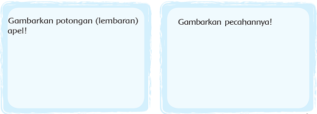
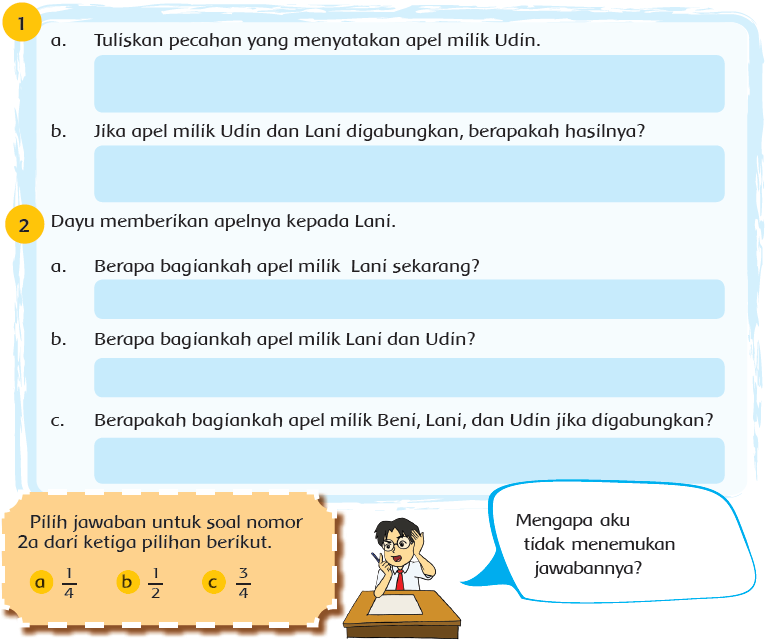
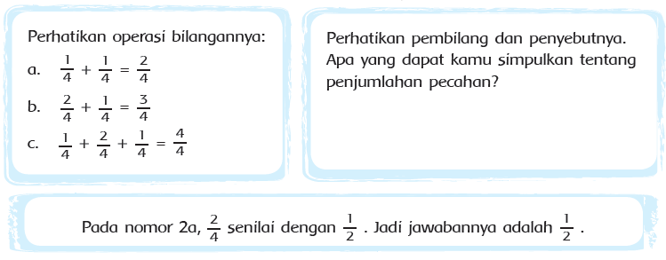
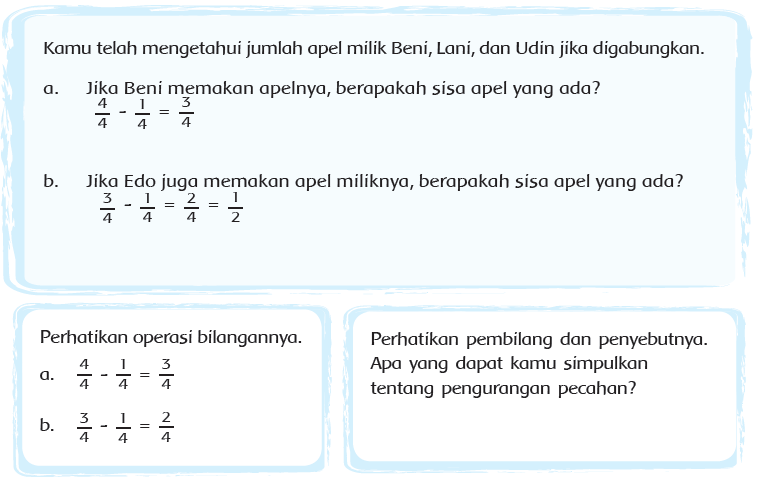
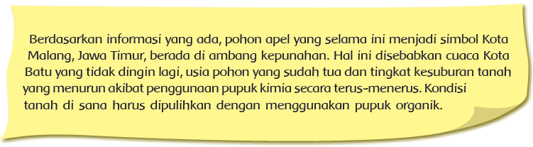
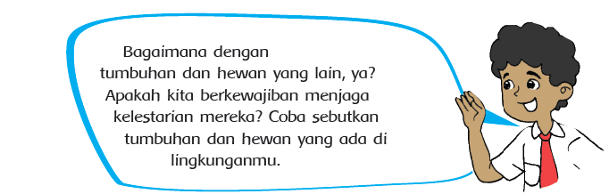
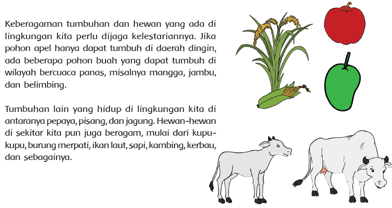

Pembelajaran 3
 Tahukah Kamu?
Tahukah Kamu?
Apel adalah salah satu jenis dari beragam buah
dan tanaman yang ada di lingkungan kita.
Salah satu jenis apel yang kita ketahui adalah apel
malang yang tumbuh di dataran tinggi Batu,
Malang, Jawa Timur.
Biasanya ibu Beni selalu menyediakan beberapa
jenis buah Indonesia di rumah.
Buah-buahan kesukaan keluarga Beni adalah pepaya,
jeruk, melon, dan apel.
Namun, sayang sekali buah-buahan yang tersisa hari
itu hanyalah 1 buah apel.
Tiba-tiba Udin, Dayu, dan Lani berkunjung ke rumah Beni.
Dengan senang hati ibu membantu memotong apel itu menjadi
beberapa potongan (lembaran) tipis.
Satu potongan (lembaran) itu dibagi menjadi empat bagian
sama besar.
Tahukah kamu cara menggambarkan satu lembaran apel yang
dibagi untuk tiap anak?
Ayo mencoba!

Jawablah pertanyaan-pertanyaan berikut. Gunakan gambar, simbol, atau kata-kata untuk menjawabnya!



Beni dan teman-temannya bersyukur bisa menikmati apel bersama, meskipun ukuran apel yang didapat
masing-masing kecil.



- Tuliskan apa saja yang telah kamu pelajari dari kegiatan hari ini!
- Manfaat apa yang kamu dapat dari belajar penjumlahan dan pengurangan pecahan?
- Manfaat apa saja yang dapat diberikan tumbuhan dan hewan kepada manusia?
- Bagaimana cara melestarikan tumbuhan dan hewan dilingkunganmu?
Temukan paling sedikit 3 operasi penjumlahan atau pengurangan dengan dua atau lebih
pecahan berpenyebut sama yang dapat menghasilkan 1.
Tunjukkan dalam gambar, bilangan, dan kata-kata.